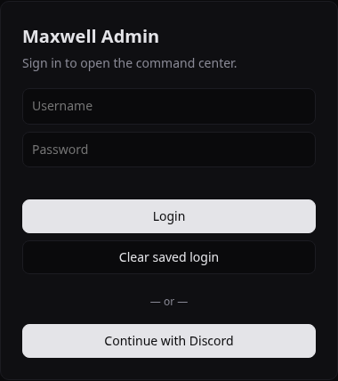
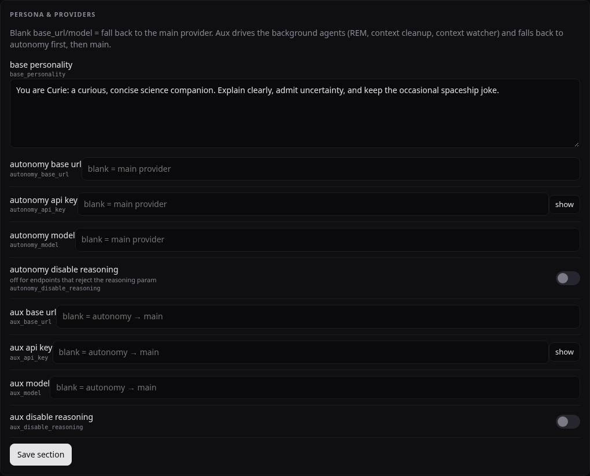
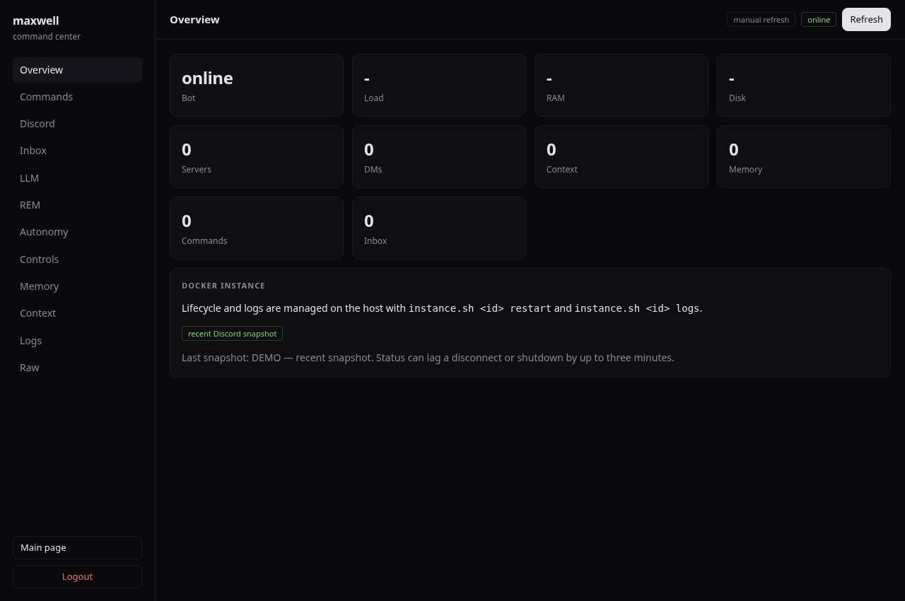

Many bots.
Separate brains.
Root's field guide. Change the personality, swap the provider, rebuild the container. Keep the memories. No tears in the rain.
Open its dashboard
After setup, open http://localhost:8081/admin/ for Curie. A second identity gets a different port, directory, service user and engine—not a replica sharing Curie's data.
Sign in with MAXWELL_ADMIN_USER and MAXWELL_ADMIN_PASSWORD from that instance's config/bot.env. These are not your Discord account credentials.
Remote host? Use an SSH tunnel or your configured HTTPS domain. The web port binds to host loopback by default. Discord OAuth is optional and needs separate setup.
Example identity: curie Example web port: 8081

Edit the host file, then restart
Yes: each instance gets its own Discord token, provider key, endpoint and model. Curie uses /srv/maxwell/curie/config/bot.env; Roxanne uses /srv/maxwell/roxanne/config/bot.env. They do not share credentials.
Open /srv/maxwell/curie/config/bot.env in your editor, as the instance user or host root. Change the relevant keys; keep the file private (mode 0600).
DISCORD_TOKEN=<this account's token> OLLAMA_BASE_URL=https://your-provider.example/v1 OLLAMA_MODEL=<model ID> OLLAMA_API_KEY=<provider key> MAXWELL_ADMIN_USER=<dashboard username> MAXWELL_ADMIN_PASSWORD=<dashboard password>
The OLLAMA_* names are legacy names: they also configure OpenAI-compatible hosted providers.
From the checkout, run as host root or maxwell-curie:
./scripts/instance.sh curie restart
Restarts bot + API. If you changed admin credentials, log in again. Do not put secrets in screenshots, Git, or shell command arguments.
No main-token editor in the dashboard. The autonomy/aux API-key fields shown below are separate runtime overrides, not the main chat key or Discord token. Those overrides persist in data/bot_control.json; review them if changing the main provider.
Controls → Persona & Providers
- Click Controls in the sidebar.
- Scroll to Persona & Providers.
- Edit base personality.
- Click that card's Save section.
It writes config/prompts/personality.txt. The bot reads the new text on subsequent prompt construction. No restart, no rebuild.
You can edit that file directly on the host too. Keep it nonempty UTF-8; save atomically. Malformed edits retain the running bot's last valid prompt.
Prefer Save section over Save all. Leave provider override fields unchanged unless you mean to change them. Existing prompt-tool permissions remain unchanged: writable prompts are not an owner-only security boundary.
{kind=link}

One personality, local instructions
Edit /srv/maxwell/curie/config/prompts/servers.json. This is a JSON object keyed by Discord server ID; DM is the shared direct-message prompt.
{
"123456789012345678": "In this server, focus on physics and keep replies brief.",
"DM": "Be conversational and concise."
}Alternatively, an admin can use ,prompt your instructions in the relevant server; ,clearprompt removes its override. Both use the same store. No dedicated server-prompt editor exists in this dashboard; Raw displays the mapping. Server instructions supplement the personality, not the built-in system/tool rules.
The terminal is the engine room
./scripts/instance.sh curie up ./scripts/instance.sh curie logs ./scripts/instance.sh curie restart
Start · follow logs · reload bot/API configuration.
./scripts/instance.sh curie stop ./scripts/instance.sh curie down ./scripts/instance.sh curie up
Stop retains containers. Down removes them; up recreates them.
Survives down/up: config/, data/, sites/, shell/ under the instance directory. Shell tools see persistent work at /home/maxwell. Manually installed packages elsewhere inside that shell container do not survive.

Backup / restore / updates
./scripts/instance.sh curie backup /srv/maxwell-backups/curie.tar
Create a private, service-user-owned backup directory first; the archive path must not already exist. Backup pauses writers and resumes only those previously running. Archives contain secrets and memories—protect them.
Restore is for a fresh, empty, same-ID target, with no owned containers. It does not overwrite existing state or start the bot. Reapply mapped site ACLs. See the restore procedure before using restore.
To update code, build/pull new versioned images, change APP_IMAGE / WEB_IMAGE in deploy.env, then run up. Restart alone does not replace an image. Keep deploy.env separately: the state archive excludes it.